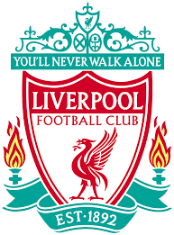

LIVERPOOL
0
-
3

"O Flamengo sempre foi meu time de coração,
que aprendi a gostar graças ao amor do meu pai ao clube.
Ele era um torcedor apaixonado.
Cada filho que nascia, ele dava um uniforme completo."
-
A partir de 1978, entretanto, o Flamengo ingressaria em um período áureo sob o comando em campo de Zico. Com um futebol quase perfeito, só possível de ser parado com violência, Zico conquistou um tricampeonato carioca, o terceiro do clube, nas edições daquele ano com as duas realizadas em 1979, mesmo ano em que o time conquistaria o prestigiado torneio amistoso Ramón de Carranza, com destaque para a vitória por 2 a 1, em que ele marcou um dos gols, sobre o Barcelona de Johan Neeskens, Allan Simonsen, Hans Krankl e Carles Rexach. Em 1979 ele também marcou seu 245º gol, em partida contra o Goytacaz, superando, ainda aos 26 anos, Dida como o maior artilheiro da história do Flamengo. No ano seguinte, viria finalmente o inédito título no Campeonato Brasileiro. As finais foram contra o Atlético Mineiro de Reinaldo, Toninho Cerezo e Éder. Contundido, Zico não jogou a primeira partida, em que os alvinegros venceram, no Mineirão, por 1 a 0. Voltou ao time no jogo de volta, no Maracanã, tendo dado passe para o primeiro gol e marcando o segundo do Flamengo na vitória por 3 a 2 que lhe deram pela primeira vez às suas mãos a taça de campeão nacional, compensando a decepção no Carioca, onde Zico vê os rivais Vasco e Fluminense decidirem o título. Ainda em 1980, Zico conquistaria com o Flamengo outros dois torneios amistosos europeus: o Torneio Astúrias e Algarve, com vitórias sobre Real Sociedad e Spartak Sófia; e um bi no Ramón de Carranza, passando por Dínamo Tbilisi e Real Betis.